酸碱中和滴定
在这个实验中，我们用三个锥形瓶，每个瓶中都添加150ml的H2O(液体)，分别在三个锥形瓶中添加0.001mol的石蕊(指示剂)、0.001mol的酚酞(指示剂)和0.001的甲基橙(指示剂)。这些指示剂在“添加药品”对话框的“溶质”活页中。
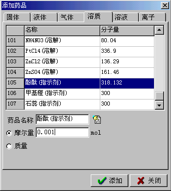
再从器件箱中创建出一个酸式滴定管，在其中添加0.01mol/L的HCl(溶液)50ml；创建出一个碱式滴定管，在其中添加0.01mol/L的NaOH(溶液)50ml。
因为指示剂的颜色是根据溶液中H+(离子)的浓度变化而变化的，所以在容器中，我们需要考虑HCl(溶解)电离和NaOH(溶解)电离的离子方程式，还要考虑H2O(液体)微弱电离的离子方程式。以其中一个锥形瓶为例，打开它的属性窗体，为了便于搜索到HCl电离和NaOH电离的化学方程式，我们再给这个容器添加0mol的HCl(溶解)和NaOH(溶解)。在“容器中的反应”活页中点击“自动搜索”按钮，弹出“搜索方程式”对话框，选中“考虑离子反应”一项，然后点击“搜索”按钮。
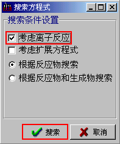
这样可以搜索到以下这些方程式。删除如图所示的方程式，只保留HCl电离、NaOH电离和H2O电离的离子方程式。其中H2O的电离是一个可逆反应，它的默认平衡度是H2O在20摄氏度时的电离平衡度。另外H2O电离的方程式要放在方程式列表的最后，用鼠标按住列表左侧方程式的序号不放，上下移动鼠标可以改变方程式在列表中的位置。注意不要选中“智能处理反应”这个选项。最后点击“确定”按钮。用同样的方法，为其它两个锥形瓶也制定这样的反应。
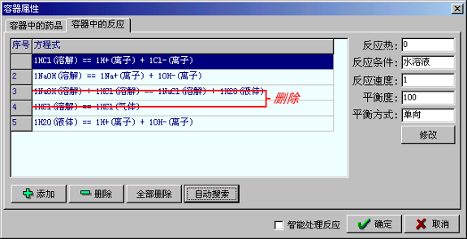
现在就可以运行实验了。运行后请您把滴定管中液体慢慢的点滴到锥形瓶中，您会发现指示剂的颜色发生了变化。
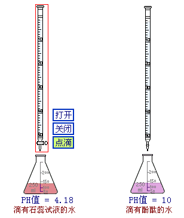
下一步，我们还可以用注释动态的表示出溶液的PH值。首先点击停止按钮，停止运行中的实验。溶液的PH值是溶液中H+(离子)摩尔浓度的负对数，所以我们要先计算出溶液中H+(离子)的浓度。以其中一个锥形瓶为例，我们弹出它的属性对话框，为容器中H2O(液体)的质量定义变量为a1；为H+(离子)的摩尔量定义变量为b1。
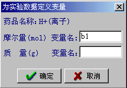
确定对容器属性的修改后，再从主菜单中点击[程序]——[变量编辑器],弹出“变量编辑器”对话筐。我们需要自定义一个变量:ph1，来表示这个容器中溶液的PH值。按如下图所示，输入变量名：ph1，设置初始值：7，然后点击添加按钮就可以完成变量的添加了。添加完成后，点击“关闭”按钮，关闭变量编辑器。
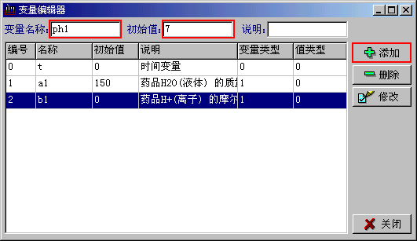
再从主菜单中点击[程序]——[程序编辑器]，弹出“程序编辑器”对话框。在此对话框中，我们输入以下程序。然后点击“确定”按钮。
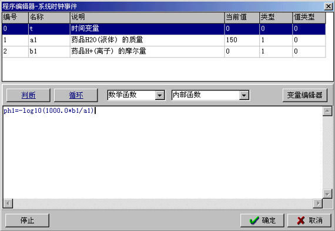
最后，创建一个注释对象，用它来动态的表示变量ph1的值。
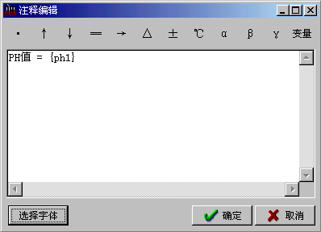
再运行实验，往锥形瓶中滴加酸或碱时，您就可以看到锥形瓶中溶液PH值的变化了。
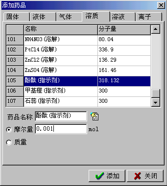
再从器件箱中创建出一个酸式滴定管，在其中添加0.01mol/L的HCl(溶液)50ml；创建出一个碱式滴定管，在其中添加0.01mol/L的NaOH(溶液)50ml。
因为指示剂的颜色是根据溶液中H+(离子)的浓度变化而变化的，所以在容器中，我们需要考虑HCl(溶解)电离和NaOH(溶解)电离的离子方程式，还要考虑H2O(液体)微弱电离的离子方程式。以其中一个锥形瓶为例，打开它的属性窗体，为了便于搜索到HCl电离和NaOH电离的化学方程式，我们再给这个容器添加0mol的HCl(溶解)和NaOH(溶解)。在“容器中的反应”活页中点击“自动搜索”按钮，弹出“搜索方程式”对话框，选中“考虑离子反应”一项，然后点击“搜索”按钮。
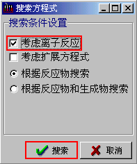
这样可以搜索到以下这些方程式。删除如图所示的方程式，只保留HCl电离、NaOH电离和H2O电离的离子方程式。其中H2O的电离是一个可逆反应，它的默认平衡度是H2O在20摄氏度时的电离平衡度。另外H2O电离的方程式要放在方程式列表的最后，用鼠标按住列表左侧方程式的序号不放，上下移动鼠标可以改变方程式在列表中的位置。注意不要选中“智能处理反应”这个选项。最后点击“确定”按钮。用同样的方法，为其它两个锥形瓶也制定这样的反应。
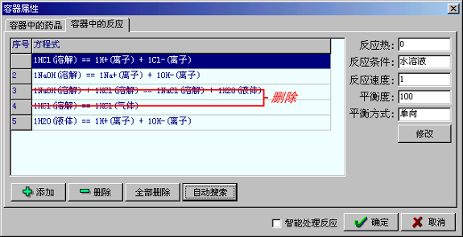
现在就可以运行实验了。运行后请您把滴定管中液体慢慢的点滴到锥形瓶中，您会发现指示剂的颜色发生了变化。
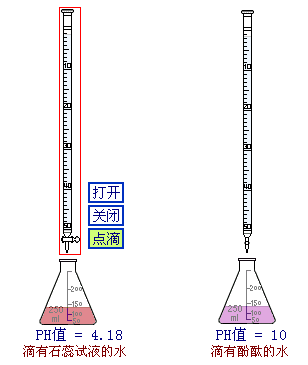
下一步，我们还可以用注释动态的表示出溶液的PH值。首先点击停止按钮，停止运行中的实验。溶液的PH值是溶液中H+(离子)摩尔浓度的负对数，所以我们要先计算出溶液中H+(离子)的浓度。以其中一个锥形瓶为例，我们弹出它的属性对话框，为容器中H2O(液体)的质量定义变量为a1；为H+(离子)的摩尔量定义变量为b1。
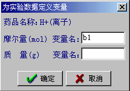
确定对容器属性的修改后，再从主菜单中点击[程序]——[变量编辑器],弹出“变量编辑器”对话筐。我们需要自定义一个变量:ph1，来表示这个容器中溶液的PH值。按如下图所示，输入变量名：ph1，设置初始值：7，然后点击添加按钮就可以完成变量的添加了。添加完成后，点击“关闭”按钮，关闭变量编辑器。
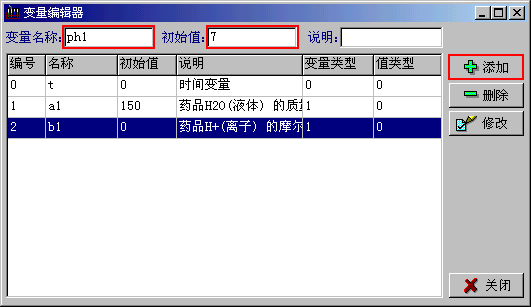
再从主菜单中点击[程序]——[程序编辑器]，弹出“程序编辑器”对话框。在此对话框中，我们输入以下程序。然后点击“确定”按钮。
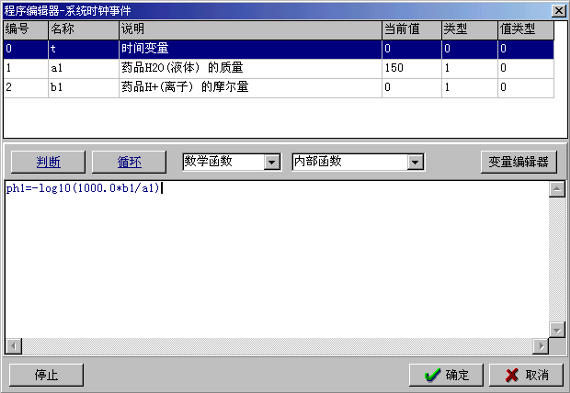
最后，创建一个注释对象，用它来动态的表示变量ph1的值。
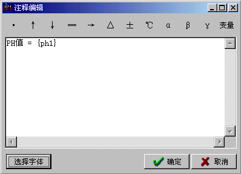
再运行实验，往锥形瓶中滴加酸或碱时，您就可以看到锥形瓶中溶液PH值的变化了。
下载本课件